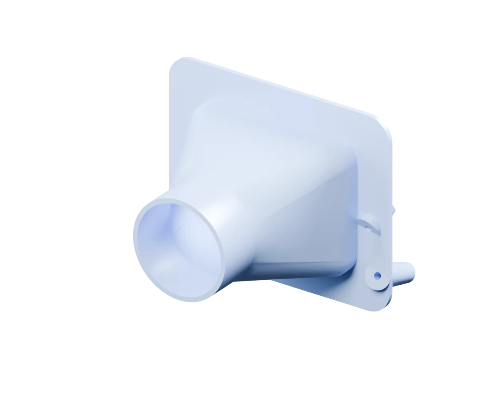
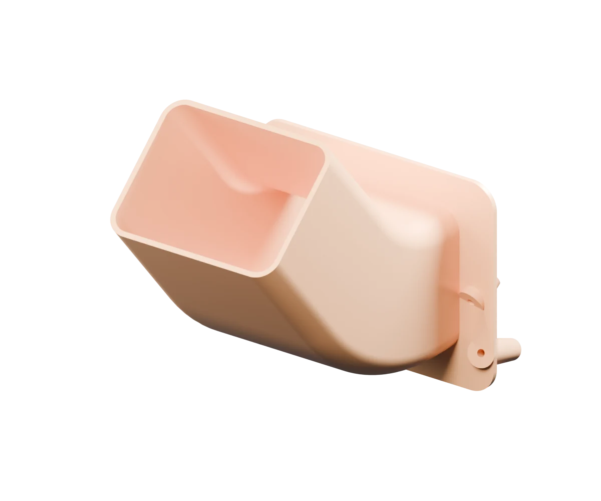

ATHE UPSTREAM CONNECTION
Hose adapter
One provisional liner interface, two nominal hose classes. Compare the actual circular passages.
- Size choices
- 2.5 inch / 3 inch
- Clear bore
- Ø57.5 / Ø70.2
- Still unresolved
- Actual hose joint
GR COROLLA / FRONT BRAKE STUDY
Three approaches.
One brake corner.
Compare a two-size adapter, a long rigid duct, and the connections needed for a complete hose-fed system.
Find your approachDigital concepts · Fit, materials and cooling unverified.

Architecture only. Hose route, supports and receiver geometry are unresolved.
Real geometry. Presentation colours. Nominal scale, not calibrated fit.
A — UPSTREAM HOSE ADAPTER
A straight rectangular-to-round adapter compares nominal 2.5-inch and 3-inch hose classes on the same provisional liner interface.
Nominal, uncalibrated CAD values. Hose class does not define actual spigot fit.
A larger passage occupies more radial space. Actual hose, clamp, end treatment and retention remain unresolved.
Concept connection only. No mechanical bridge to the moving brake assembly.
SIDE BY SIDE
The same provisional liner interface.
Three different ways forward.
One provisional liner interface, two nominal hose classes. Compare the actual circular passages.

A closed bend and long rectangular outlet carry the supply farther into the brake region.
Flattened transition, supported flexible hose and a separate rotor-centre receiver.
The 3-inch-class adapter has 49.052% more measured circular passage area than the 2.5-inch reference. That is geometry, with no measured flow or cooling advantage.
BUILT ON EVIDENCE
These are scan-based digital concepts.
Physical fit, material suitability and
cooling performance remain unverified.
The adapter and rigid references share a scan-derived frame and proposed liner mounts. Their oversized capture and separated seats do not establish contact, a seal or a retained load path.
The full hose system is shown as an architecture schematic. A working upstream component does not finish its hose, moving connection or rotor receiver.
Both adapter sizes and the long rigid reference pass independent native recompute, sections, selected edits, fresh reopen and STEP/STL transfer checks.
Current-pose checks found zero tested triangle crossings against the recorded scan crop. The shared nearest vertex sample is 0.309 nominal units; it is not certified minimum clearance. These results apply to A and B, not an installed full system.
Physical calibration, liner sealing and backside support, fastener retention, the installed wheel and tyre, full steering and suspension motion, and material/process/heat suitability remain unresolved.
The wheel is absent from the scan. Reflected geometry does not verify the other side. No prototype, installation or cooling result is approved by these checks.
A selected hose and two retained joints, supports that allow motion without kinking or abrasion, and a separate nonrotating receiver with verified mounts and access to the rotor throat.
A rotor-face circle does not define that receiver. Product-specific bend-radius data do not establish continuous flex life, and a hose temperature label does not qualify a printed adapter.
A and B show real component CAD. “In the car” uses one recorded scan pose; “Section” is a diagnostic cut. Interactive 3D shows only the component.
Every C view is a schematic. Dashed lines mark unresolved hose routing and receiver mounts. Arrows describe connections, not simulated airflow. Dimensions remain nominal and uncalibrated.
THE DESIGN CONVERSATION
The Yaris example informs the closed regional duct. Verus informs the complete hose-fed architecture. Their dimensions, attachment details and performance claims do not transfer to these references.